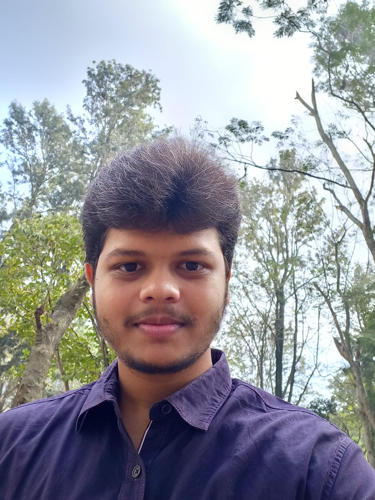

EDUCATION
B.tech
(2022-2026)
Koneru Lakshmaiah Educational Foundation Vaddeswaram, Guntur, Vijayawada, AP
CGPA: 9.3
BIE-AP
(2020-2022)
Narayana Junior Boys College Tadigadapa, Krishna, Vijayawada, AP
CGPA:8.2
CBSE
(2019-2020)
Delhi Public School Bangalore East, Sarjapura, Bangalore, KN
CGPA:7.1
About Me:
Dedicated college student with a strong interest in cybersecurity and web development.
Skilled in secure coding and developing web applications with the ability to learn independently.
Committed to expanding expertise in cybersecurity and contributing to safe and innovative web solutions.
Projects:
1. Square Code using C :
Built a C code to compose secret messages by using the columns and rows of a matrix to encrypt the message
2. Resume using HTML and CSS :
Designed this Resume using my HTML and CSS to showcase my web development skills
Skills:
> C Programming
> Java
> HTML
> CSS
> Independent learner
> Problem Solving Skills
> String Communication
Languages:
1. Telugu (Read, Speak)
2. English (Read, Write, Speak)
3. Hindi (Read, Speak)
Hobbies:
> Gaming
> Browsing news
> Coding
> Travelling
> Cooking